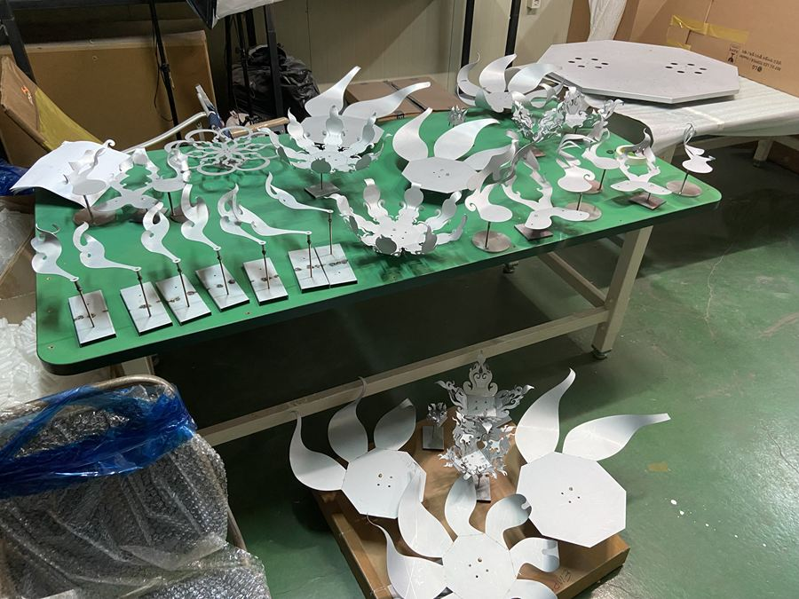
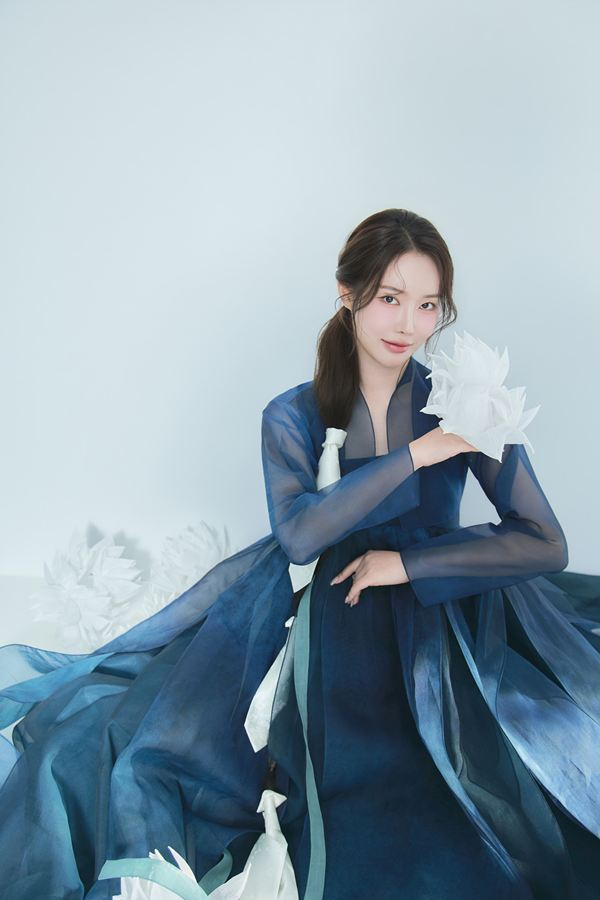
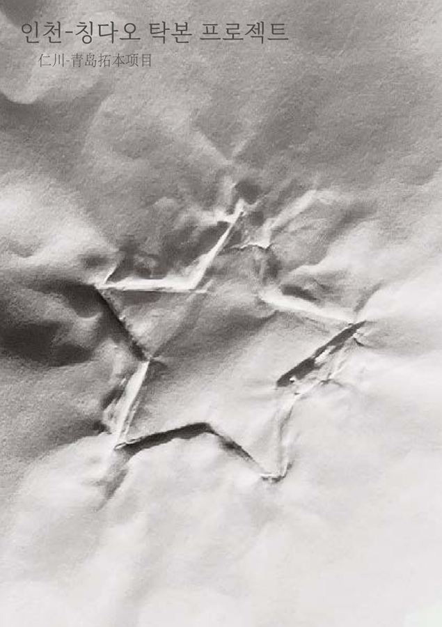
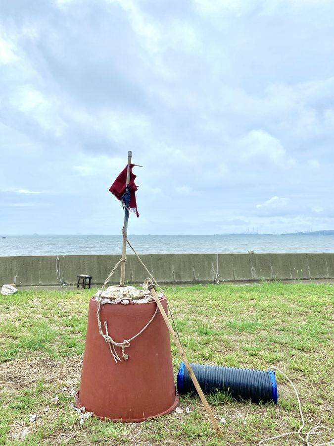
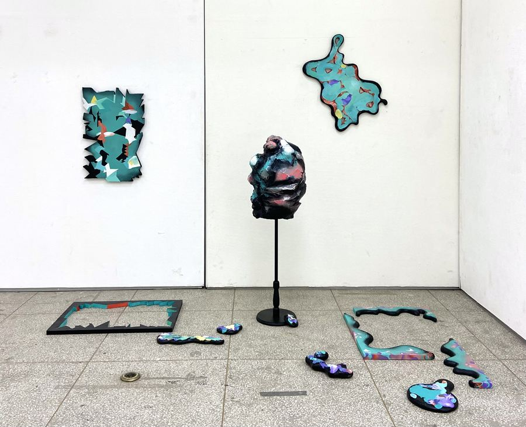

Projects

금속 협업Metal Collaboration · 2022–2025금속 협업
협찬Sponsorship화보 오브제 협찬 공공미술Public Art · 2026평화문화진지 일대 공공미술 프로젝트
공공미술Public Art · 2026평화문화진지 일대 공공미술 프로젝트 공공미술Public Art · 2025아트.T 인천 일상생활공간 미술 프로젝트
공공미술Public Art · 2025아트.T 인천 일상생활공간 미술 프로젝트
도시기록Urban Archive · 2025인천-칭다오 탁본 프로젝트레지던시Residency레지던시Residency · 2023윤슬바다학교 2기 창작 레지던시

퍼포먼스Performance · 2023원을 그리는 삶은 어디로 가는가?
팀 작업Team Work · 2022헤쳐 모여!